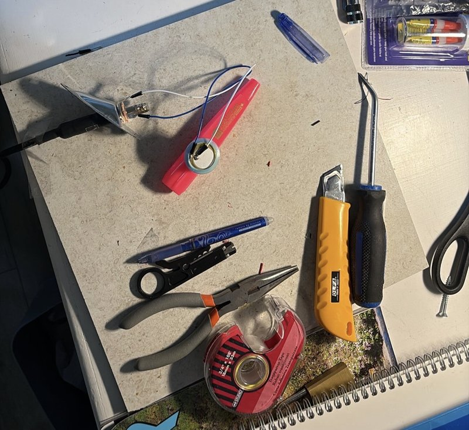
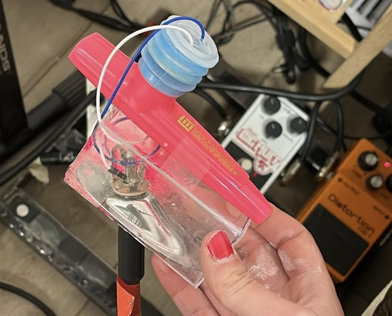

I made this instrument because I was curious about running organic vocal-driven sounds through FX pedals and amps.
Electric kazoos can be purchased for about $60 CAD, but since this is basically a kazoo with a simple pickup I figured I’d try electrifying a kazoo myself, following this tutorial.
The majority of the effort here was spent walking around thrift stores in downtown Victoria looking for some sort of plastic piece that could hold the piezoelectric disc, since Long & McQuade only had regular size kazoos and the disc was too wide for the radius of the resonator cavity.

I eventually found this thin blue plastic thing that fit perfectly over the resonator lip, and superglued another piece of plastic from a medicine bottle lid over a section of that to cover the disc. I got the jack plate from Island Collateral and Sales (for FREE, shoutout to those guys). The 1/4″ female jack was purchased with the kazoo from L&M.
The wiring was very simple and matches the tutorial exactly, I used a couple jumper wires I already had to extend from the disc to the jack. The cover was made by scoring and snapping a broken CD case, and the whole thing is held together by superglue and tape (it was good enough). Eventually I’d probably find a better way to mount the jack/plate and put everything inside copper foil to reduce feedback, but for now it works.
- 1
- 2
- 3
- 4
I would describe the sound as kazoo-like, but it sounds pretty awesome put through some overdrive and fuzz effects. An octave pedal would also be fun to try.